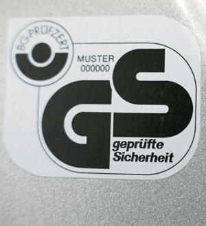

Ihre Maschinen, Geräte, Anlagen und Einrichtungen sollen sicherheitstechnisch einwandfrei sein. Das ist dann gegeben, wenn Sie
und
Maßnahmen zur Beseitigung der sicherheitstechnischen Mängel sind in dieser Handlungshilfe zur Gefährdungsbeurteilung aufgeführt.